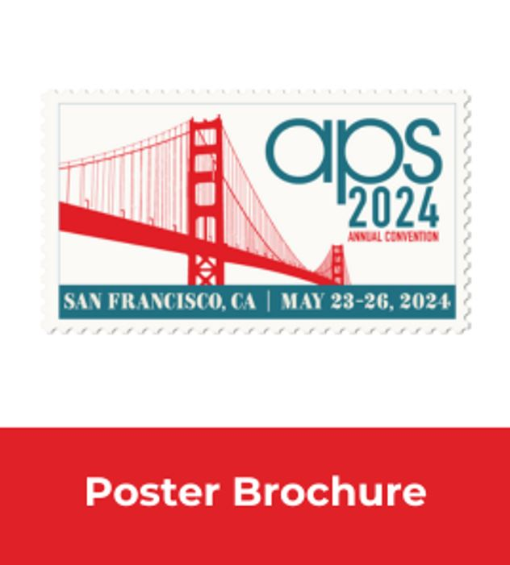
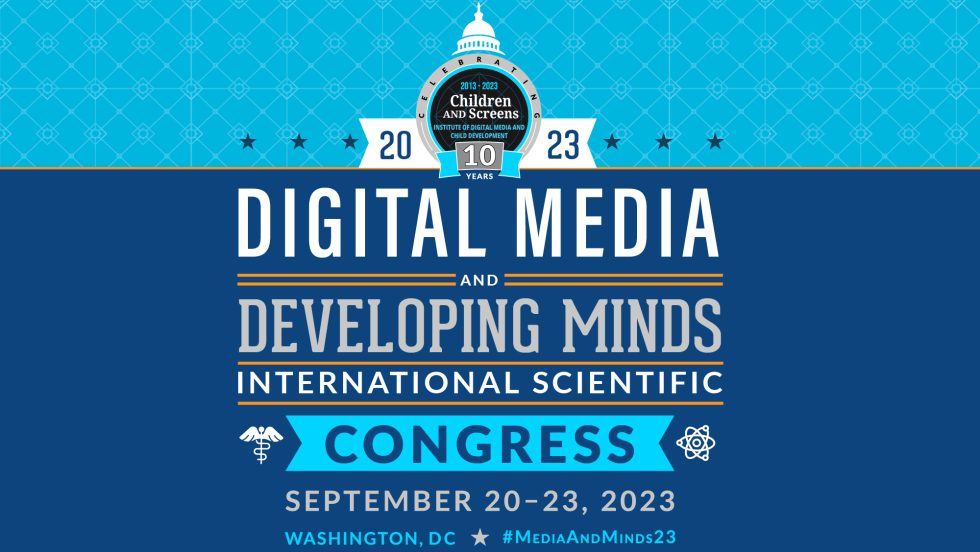
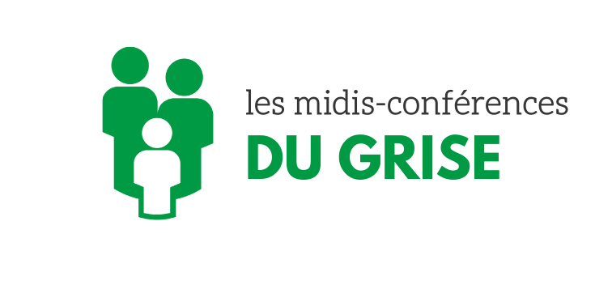
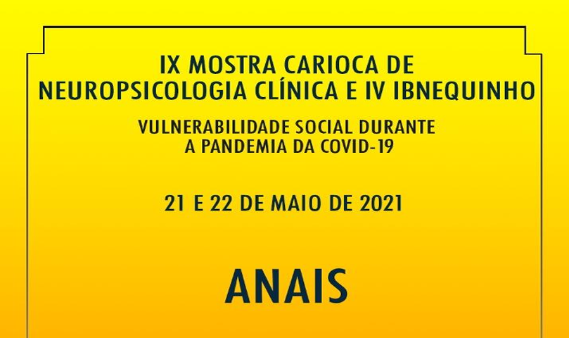
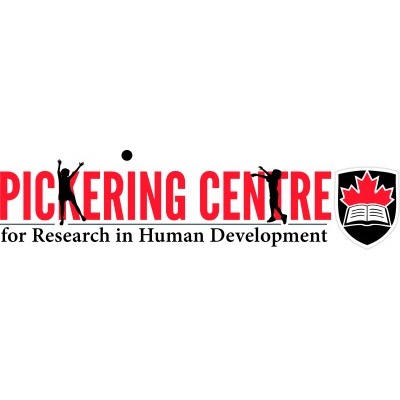

About Gabriel
- Name: Gabriel Arantes Tiraboschi
- Location: Sherbrooke, QC, Canada
- Email: gabriel.arantes.tiraboschi@usherbrooke.ca
- Email: gabriel_arantes_t@hotmail.com
Hello, I am a Psychologist and Researcher specialized in the effects of screen media on vision, cognition, and mental health, with international experience and expertise in psychological assessment, experimental design, and data analysis. On this site, you’ll get to know me better, but here’s a brief summary of my skills:
Research
10 years
Psychological methods, Design,
Data collection, Analysis, Reporting, and Presentation
Statistical Modeling
7 years
Large-scale datasets, R-Studio,
Structural Equation Modeling, etc.
Programming
6 years
statistical modeling and data collection
software
Teaching and Mentoring
6 years
Psychology for undergraduate and
graduate students
Who am I
I am a Psychologist and Researcher with a solid foundation in psychological research, specializing in the effects of screen media on vision, cognition, and mental health. With extensive international experience, I have contributed to significant studies across Brazil and Canada, bringing both clinical and research expertise to my work.
I hold a BA in Psychology, a Master’s, and a Ph.D. in Psychobiology, all from the University of São Paulo, one of Latin America’s leading institutions. My professional development began with an undergraduate research grant to study the visual processing of body images using psychophysical methods. Since then, during my graduate studies, I have led research investigating how video games influence visual attention, including international collaborations in Canada supported by a research grant for an internship at Université de Montréal and McGill University.
In my professional career, I have served as a Psychology professor at São Paulo State University and was later invited to work as a Postdoctoral Fellow at Université de Sherbrooke, Canada. There, I focused on examining screen media’s effects on child and adolescent development, receiving a two-year research grant from Fonds de Recherche du Québec to support this work. My research has been featured in prominent media outlets, including Radio Canada (CBC), and was presented in several conferences across the world.
Throughout my career, I have developed expertise in statistical analysis, including complex statistical modeling of large datasets using structural equation modeling, as well as in experimental design and psychological assessment. I have a strong track record of publishing in reputable journals and am now seeking to apply my skills to industry roles where I can leverage my research insights to drive data-driven strategies and contribute to the development of innovative products and solutions that promote user well-being and cognitive health.
Education
Specialization in research
Université de Sherbrooke, QC, Canada
2022-2023
Ph.D. in Psychobiology
University of São Paulo, Ribeirão Preto, SP, Brazil (Host university)
*Including a 1-year internship at the Université de Montréal, Montréal, QC, Canada
2017-2021
Master’s in Psychobiology
University of São Paulo, Ribeirão Preto, SP, Brazil
2015-2017
Bachelor’s in Psychology
University of São Paulo, Ribeirão Preto, SP, Brazil
2010-2015
Information Technology Technician
Senac, Porto Alegre, RS, Brazil
2017-2019
Experience
Postdoctoral Fellow
2022 - PresentLead research projects about human development with statistical analysis of large datasets; supervised graduate and undergraduate-level students on their research projects. In the first year of the postdoctoral internship, I was awarded a research grant covering 2 years for my project on the investigation of media habits on academic achievements. This grant can be extended for an additional year.
Université de Sherbrooke, Canada
Fixed-term Lecturer
2021 - 2022Teaching Psychology in two undergraduate-level courses: “Biological Basis of Behavior” and “Psychology and People with Disabilities”.
São Paulo State University, Brazil
IT Support
2021 - 2022Worked briefly as an IT support specialist in a public hospital.
Hospital das Clínicas da Universidade de São Paulo, Brazil
Lecturer
2019Teaching Psychology in the undergraduate-level course “Basic Psychological Processes”.
Calafiori University, Brazil
Graduate Teaching Assistant
2016 - 2018Assist in teaching undergraduate students in the Psychology courses “Psychometrics” and “Basic Psychological Processes III”.
University of São Paulo, Brazil
Clinical Intern in Psychology
2013 - 2015Completed 530 hours of clinical internships, including psychotherapy interventions using behavioral analysis techniques, neuropsychological evaluation, and school psychology in higher education.
University of São Paulo, Brazil
International Journal of Environmental Research and Public Health
2024
European Child & Adolescent Psychiatry
2024
Journal Frontiers in Psychiatry
2023-2024
Journal Estudos de Psicologia
2019
Software development
Programming computerized experimental tasks for data
collection:
I developed computer tasks to collect data for various laboratory experiments with
human participants during my graduate studies at the University of São Paulo.
Examples of this are a computerized task to assess the perception of facial emotion or to test visual attention, which have been used in my PhD thesis. I
also programmed other experiments that can be downloaded on GitHub
for free.
Software for teaching psychophysical methods:
I developed 2 windows-based software to simulate
psychophysical tasks for undergraduate students in Psychology. The students
completed these tasks and analyzed their own results. The first software is a demonstration of the Constant Stimuli
Method and the second is a demonstration of the Signal Detection Theory. These
software can be downloaded through the Laboratory of Perception and Psychophysics website and are
still used today for the Basic Psychological Processes III course. Videos from my
YouTube channel teach students how to analyze the data resulting from these tasks.
Research on the media
My research featured in media internationally. I was also interviewed on violence in video games and the effect of internet use on the anxiety symptoms of girls. Below are media coverages that featured my research
Psypost, November 2023
Use predicts heightened anxiety symptoms in adolescent girls, but not boys. This particular publication created repercussions on public forums (Reddit).
Télé Noovo, April 2022
Prudence among youth: more video games, more ADHD?ADDitude, February 2022
Study: Playing Video Games Increases Kids’ Risk for Developing ADHD Symptoms.Radio Canada, February 2022
Playing video games results in symptoms linked to ADHD among adolescents..ADD resource center, February 2022
Video game use predicts increase in ADHD symptoms.Le Journal de Québec, January 2022
Novel study: video games linked to symptoms associated with ADHD.The conversation, June 2019.
Are brain games mostly BS?ComCiência, October 2017
The game industry on the couch: the violence controversyJornal da USP, August 2017
Action video games can promote better performance in visual attention tasks.Scientific Articles
Bidirectional associations between video game playing and ADHD symptoms among school-aged children
Tiraboschi, G. A., Fitzpatrick, C., Kim, H. S., Superbia-Guimarães, L., Kosak, L. A., & Garon-Carrier, G. (2025). Bidirectional associations between video game playing and ADHD symptoms among school-aged children. Computers in Human Behavior Reports, 19, 100740 Read more
Associations between youth lifestyle habits, sociodemographic characteristics, and health status with positive mental health: A gender-based analysis in a sample of Canadian postsecondary students
Surprenant, R., Bezeau, D., Tiraboschi, G. A., Garon-Carrier, G., Cabot, I., Brodeur, M., & Fitzpatrick, C. (2025). Associations between youth lifestyle habits, sociodemographic characteristics, and health status with positive mental health: A gender-based analysis in a sample of Canadian postsecondary students. Preventive Medicine Reports, 51, 103015. Read more
Partners with a Highly Favorable Attitude Toward Breastfeeding Contribute to Promoting Initiation and Length of Breastfeeding for More than 5 Months
Tiraboschi, G. A., Fitzpatrick, C., Bernard, J. Y., Monteiro, J. C. S., Kosak, L. A., & Garon-Carrier, G. (2024). Partners with a Highly Favorable Attitude Toward Breastfeeding Contribute to Promoting Initiation and Length of Breastfeeding for More than 5 Months in a Population-Based Canadian Study. Breastfeeding Medicine, online first.
Read moreAdolescent internet use predicts higher levels of generalized and social anxiety symptoms for girls but not boys
Tiraboschi, G. A., Garon-Carrier, G., Smith, J., & Fitzpatrick, C. (2023). Adolescent internet use predicts higher levels of generalized and social anxiety symptoms for girls but not boys. Preventive Medicine Reports, 36, 102471.
Read moreUnraveling the Effects of Maternal Breastfeeding Duration on Children’s Cognitive Abilities
Garon-Carrier, G., Tiraboschi, G. A., Bernard, J. Y., Matte-Gagné, C., Laurent, A., Lemieux, A., & Fitzpatrick, C. (2023). Unraveling the effects of maternal breastfeeding duration and exclusive breast milk on children’s cognitive abilities in early childhood. Frontiers in Public Health, 11.
Read moreAssociations Between Video Game Engagement and ADHD Symptoms in Early Adolescence
Tiraboschi, G.A., West, G.L., Boers, E., Bohbot, D., Fitzpatrick, C. (2022). Associations Between Video Game Engagement and ADHD Symptoms in Early Adolescence. Journal of Attention Disorders, 26(10), 1369-1378.
Read moreThe Sex of Body Images Modulates Size Estimations and Lateralized Responses in Body Perception
Tiraboschi, G.A., Superbia-Guimarães, L., Piran, M., Bruneli, G.G., Fukusima, S.S., & de Moraes Jr., R. (2020). The sex of body images modulates size estimations and lateralized responses in body perception. Laterality, 25(6), 699-721.
Read moreIncreased Sensitivity for Happy Faces in Depressed Patients Following rTMS
de Moraes, R., Pereira da Cruz, R., Manso Melchiades, A., Tiraboschi, G. A., Rodrigues da Silva, I. C., & de Souza, W. C. (2020). Increased sensitivity for happy faces in depressed patients following 15 Hz repetitive transcranial magnetic stimulation (rTMS) over the left dorsolateral prefrontal cortex. Psychology & Neuroscience, 13(1), 19–31.
Read moreAn Expectancy Effect Causes Improved Visual Attention Performance After Video Game Playing
Tiraboschi, G. A., Fukusima, S. S., & West, G. L. (2019). An expectancy effect causes improved visual attention performance after video game playing. Journal of Cognitive Enhancement, 3(4), 436–444.
Read moreAcademic Experiences and Psychological Suffering Among Psychology Students
Andrade, A. dos S., Tiraboschi, G. A., Antunes, N. A., Viana, P. V. B. A., Zanoto, P. A., & Curilla, R. T. (2016). Academic Experiences and Psychological Suffering among Psychology students. Psychology: Science and Profession, 36(4), 831–846., 3(4), 436–444.
Read moreBook chapters
The Role of Sex in the After Effects to Happy and Sad Faces in Both Visual Fields
Fukusima, S. S., Oliveira, T. M., & Tiraboschi, G. A. (2019). The role of sex in the after effects to happy and sad faces in both visual fields: A psychophysical study. In F. L. Osório & Mariana Fortunata Donadon (Eds.), Facial Expressions: Recognition Technologies and Analysis (pp. 121–135).
Read moreThe Impact of Action Video Game Play on Perceptual and Cognitive Skills
Tiraboschi, G. A., & Fukusima, S. S. (2019). The impact of action video game play on perceptual and cognitive skills. In G. Gauer, J. Fontenele-Araújo, & J. Landeira- Fernandez (Eds.), Psychobiological approach in psychology and neuroscience (pp. 193–215).
Read morePrizes
Fonds de recherche du Québec – Prix Relève Étoile
November 2024Prize Relève étoile from the FRQ for recognition of exceptional research contribution. Value: 1,500 CAD.
Université de Sherbrooke, Canada
Fonds de recherche du Québec – Société et culture (FRQSC) B3Z Scholarship
April 2023Canadian grant awarded for postdoctoral applications (project and curriculum analysis). Project title: Estimating the longitudinal associations between school-aged children's media habits and academic achievement. Value: 90,000 CAD.
Université de Sherbrooke, Canada
CAPES-PRINT Scholarship
March 2019Brazilian grant for an internship abroad during doctoral studies. Studied for 6 months at the Université de Montréal, later shortened to 4 months in person and extended for 1 year online due to the coronavirus pandemic. Value: 13,602 CAD.
University of São Paulo, Brazil
Second Best Presentation at the IV IBNequinho
May 2021Prize for having the 2nd best presentation at the IV IBNequinho, a conference on neuropsychology in Brazil. Value: 250 BRL plus a Psychological test kit.
University of São Paulo, Brazil
Honourable Mention in the XIII Annual Convention of the Postgraduate Program in Psychobiology
September 2018Commendation for the best PhD-level presentation with a prize. Value: 800 BRL.
University of São Paulo, Brazil
CAPES Academic Excellence Program Scholarship for PhD Students
June 2017Brazilian grant awarded for PhD studies, covering 4 years. Value: 96,800 BRL.
University of São Paulo, Brazil
CAPES Academic Excellence Program Scholarship for Master’s Students
February 2015Brazilian grant awarded for master’s studies, covering 2 years. Value: 36,000 BRL.
University of São Paulo, Brazil
CNPq PIBIC Scholarship for Undergrad Research
July 2012Brazilian grant awarded for undergrad students to conduct research. Awarded twice, each covering 1 year of research. Value: 4,800 BRL each.
University of São Paulo, Brazil
Does childhood video game consumption decrease school enjoyment?
Symposium presentation at the Life History Research Society meeting 2024, Montréal, QC, Canada.
Read more

Press Start to Distract: A Longitudinal Investigation of Video Game Playing and ADHD Symptoms
Poster presented at the APS Annual Convention, San Francisco, CA, USA.
Read moreUnraveling the Effects of Maternal Breastfeeding Duration on Cognitive Abilities
Oral Presentation at the Congrès provincial de la recherche mère-enfant, Montréal, QC, Canada.
Read more

Girls' Internet Use Predicts Higher Anxiety Symptoms During Adolescence
Flash talk and poster presentation at the Digital Media and Developing Minds Congress, Washington D.C., USA.
Read moreTime Spent Online Contributes to Increased Anxiety Symptoms in Adolescent Girls
Oral communication at the CPA’s 84th Annual National, Toronto, ON, Canada.

Exploring the Relationship Between Internet Use and Internalizing Symptoms in Adolescents
Keynote presentation for the midis-conférences du GRISE, Université de Sherbrooke, Sherbrooke, QC, Canada.
Video Game Consumption as a Risk Factor for ADHD Development
Poster presented at the Life History Research Society Meeting, UK.
Read more

Associations Between Video Game Use and ADHD Symptoms
Oral communication at the IV IBNequinho, Brazil.
Read more

Parenting and Kindergarten School Readiness
Paper Symposium at Development 2022: A Canadian Conference on Developmental Psychology, Canada.
Read more